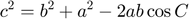

Loi des cosinus – exemple

- Utiliser la loi des cosinus pour calculer la norme de la résultante.
- Calculer l'angle de la résultante *R* avec l'axe des x'.
Contents
Procédure

Débuter en traçant le parallélogramme pour déterminer R.
Pour appliquer la loi des cosinus, il faut nommer les angles et les côtés en respectant la convention proposée dans les notes de cours.

Il s'agit du cas côté–angle–côté connus.
clear; close all; clc; F1 = 300; F2 = 500; %N a = F1; C = (1/2) * (360 - 2*50) % angle C b = F2; c = sqrt(b^2 + a^2 - 2*a*b*cosd(C)); normeR = c
C = 130 normeR = 729.9564
Angle entre R et x'
Utiliser la loi des sinus. Les trois côtés du triangle ABC sont connus ainsi que l'angle C.
Rechercher l'angle B.
sinusB = b*sind(C)/c; AngleB = asind(sinusB)
AngleB = 31.6494